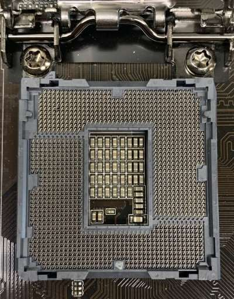
An Intel processor socket with a bent pin I worked on as a computer repair technician
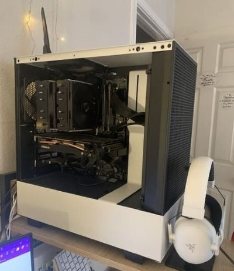
The custom PC I designed and built myself
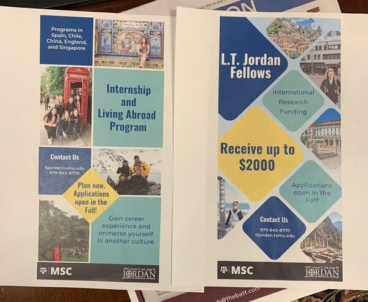
Two newspaper advertisements I designed in Adobe Illustrator
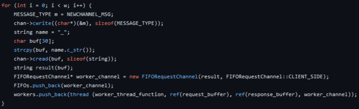
Snippet of code written in C++ utilizing multithreading to send packets between clients and servers more efficiently
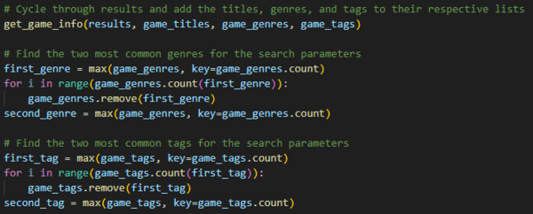
My algorithm for a website using the Django framework utilizing APIs to generate video game recommendations
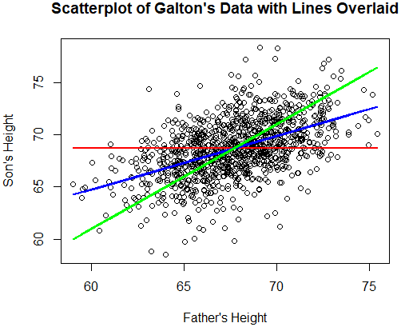
A scatter plot of Francis Galton's famous dataset exploring the relationship between heights of fathers and sons, created in R
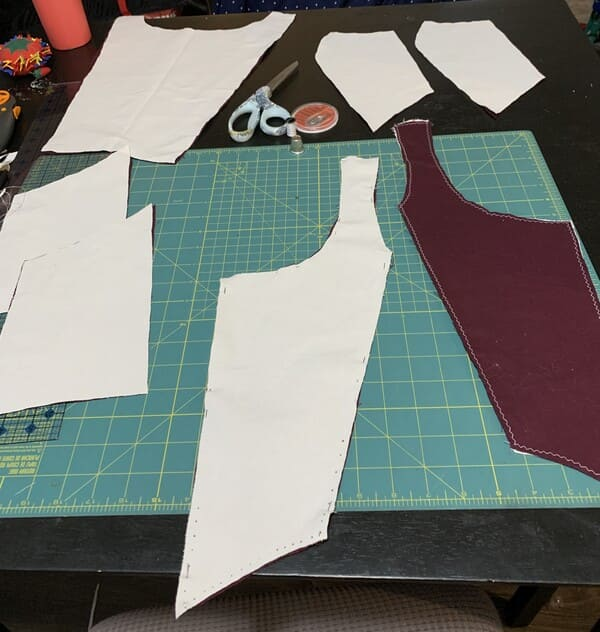
Pieces of a bodice I designed for a historical fantasy costume
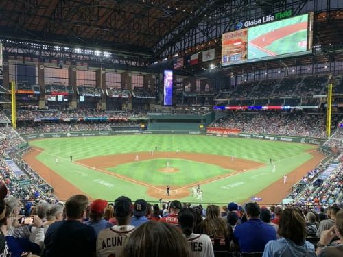
Globe Life Field, the home of my favorite baseball team, the Texas Rangers
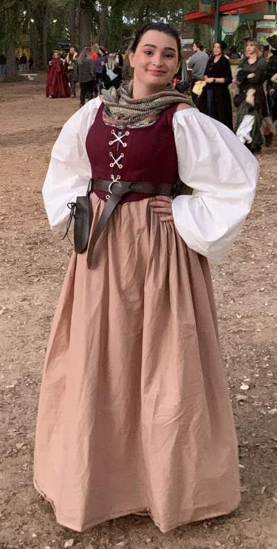
My completed costume for the Texas Renaissance Festival
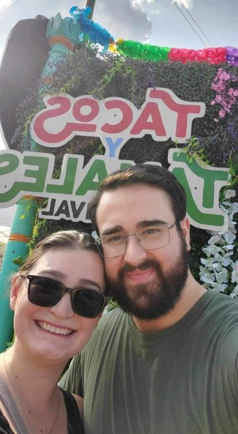
My boyfriend and I enjoyed trying new foods including tacos, churro s'mores, and more at the Tacos y Tamales Festival in Chicago, IL this summer.
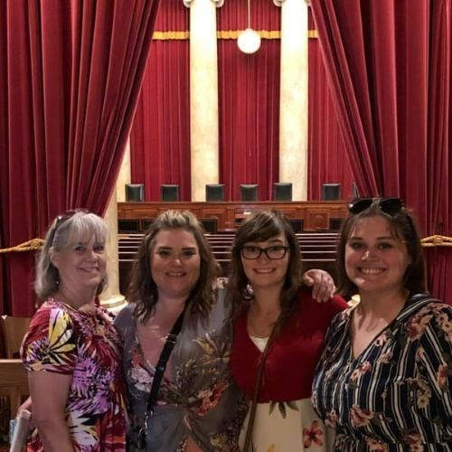
My family and I visited the old Supreme Court chambers in Washington, D.C.
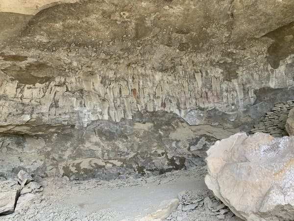
Rock paintings over 2,000 years old at the Pictograph Cave in Billings, MT